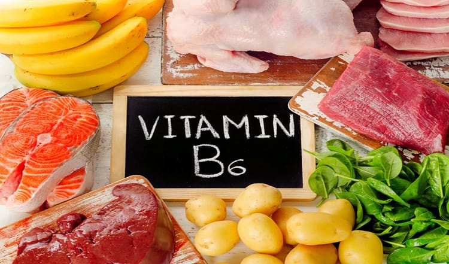
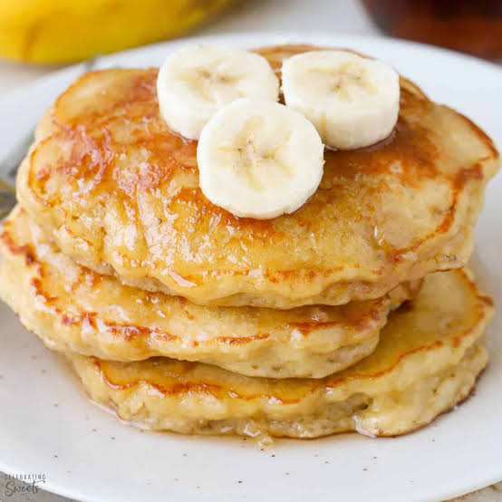

VITAMIN B6 (Pyridoxine)
INTRODUCTION
Vitamin B6, or pyridoxine, is a water-soluble vitamin found naturally in many foods, as well as added to foods and supplements. Pyridoxal 5’ phosphate (PLP) is the active coenzyme form and most common measure of B6 blood levels in the body. PLP is a coenzyme that assists more than 100 enzymes to perform various functions.
FUNCTIONS OF PYRIDOXINE
- Make antibodies: Antibodies are needed to fight many viruses, infections, and other diseases.
- Maintain normal nerve function.
- Make haemoglobin: Haemoglobin carries oxygen in the red blood cells to the tissues. A vitamin B6 deficiency can cause a form of anaemia.
- Break down proteins: The more protein you eat, the more vitamin B6 you need.
- Keep blood sugar (glucose) in normal ranges.
SOURCES OF PYRIDOXINE
- Banana
- Legumes (dried beans)
- Beef and pork
- Poultry
- Whole grains and fortified cereals
- Chickpeas
- Nuts

DEFICIENCY OF VITAMIN B6
- Microcytic hypochromic anaemia: It is the type of anaemia in which the circulating RBCs are smaller than the usual size of RBCs (microcytic) and have decreased red colour (hypochromic).
- Seborrheic dermatitis
- Neurological symptoms: confusion and convulsions
RECIPES
Banana Pancake
Ingredients
- 2 cups flour
- 2 tablespoons sugar
- 4 teaspoons baking powder
- ½ teaspoon salt
- 2 eggs, beaten
- 2 cups milk
- 4 tablespoons vegetable oil
- 4 ripe bananas, mashed (leave a few chunks)
Directions
Combine flour, sugar, baking powder, and salt.
In a separate bowl, mix together egg, milk, vegetable oil, and bananas.
Stir flour mixture into banana mixture; batter will be a little lumpy.
Heat a lightly oiled griddle or frying pan over medium high heat.
Pour or scoop batter onto pan, using about 1/4 cup for each pancake.
Cook until pancakes are golden brown on both sides.
